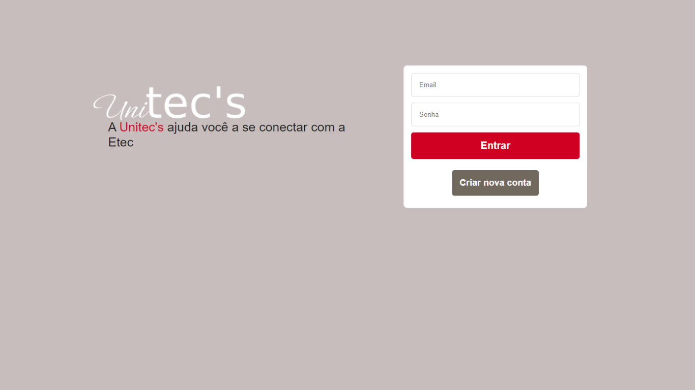
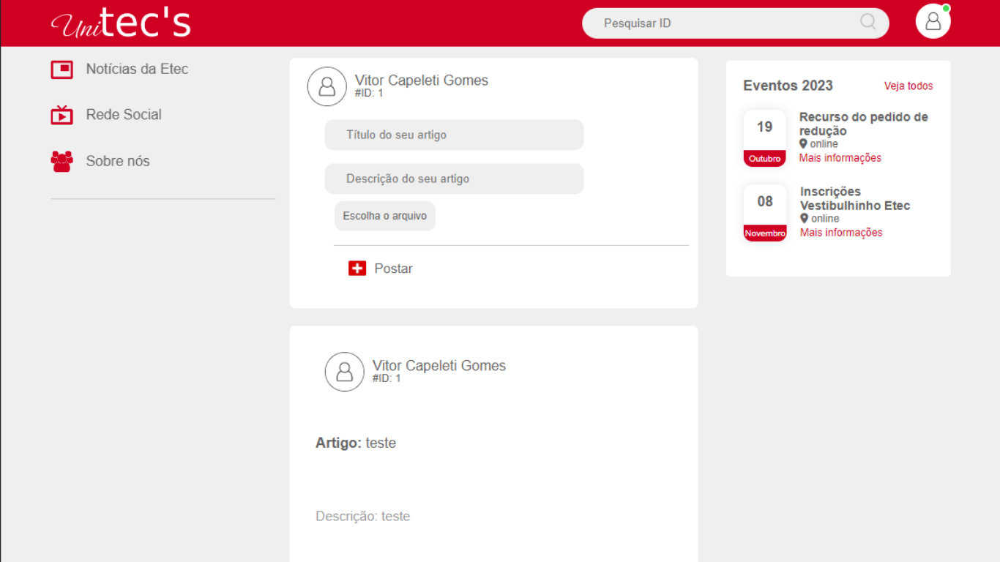
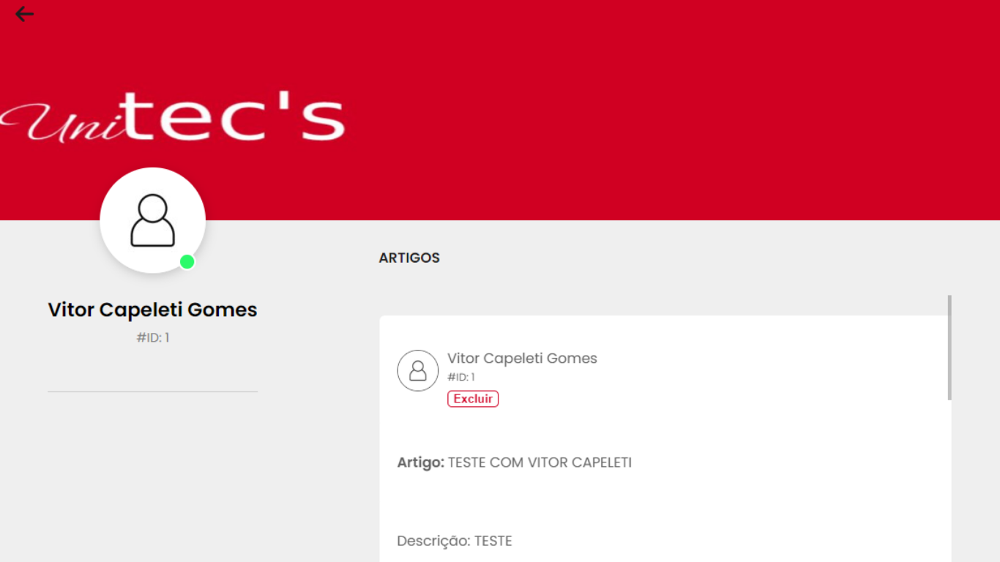

Finalidade do Projeto
A Unitec's foi o meu projeto de conclusão de curso, uma rede social criada para contribuir no compartilhamento de conhecimento entre docentes e discentes, dos cursos presentes na instituição onde me formei. A plataforma tem o intuito de encurtar a relação entre os cursos técnicos presentes na instituição, contribuindo para maior disseminação de conhecimento. A plataforma conta com um perfil pessoal, para que o aluno ou professor, possam publicar seus estudos e metodologias de aprendizados.
Tecnologias Utilizadas
A Unitec's foi uma plataforma desenvolvida por divesas tecnologias, que contribuiram para o resultado final. Para o design inicial utilizamos o Figma e o Canva para definir os componentes e como seriam alinhados, para o design na Web utilizamos HTML, CSS e Javascript, com intuito de trazer interatividade, fluidez e funcionalidade para o site. Na parte da base e manipulação de dados utilizamos o XAMPP e o MySql, para criar toda a estrutura do banco de dados e poder hospeda-lo em servidor local, já para a manipulação, tratamento e segurança de dados utilizamos o PHP como linguagem de programação.
Considerações Finais
Com todas as apresentações e demonstrações da funcionalidade da Unitec's, consguimos um feedback maravilhoso sobre o projeto. O projeto conseguiu atingir todas as expectativas do público alvo e inovou dentro do ambiente acadêmico a maneira de disseminar o conhecimento. Além de ajudar diversos alunos a encontrarem em outras áreas técnicas sua verdadeira vocação.